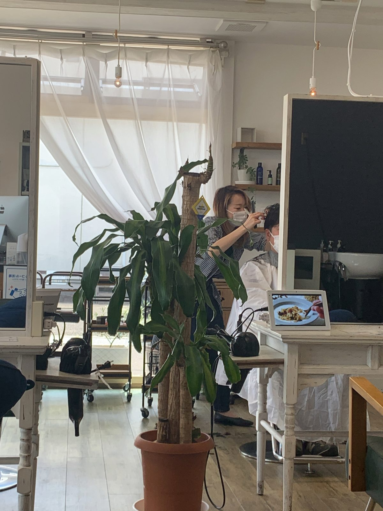
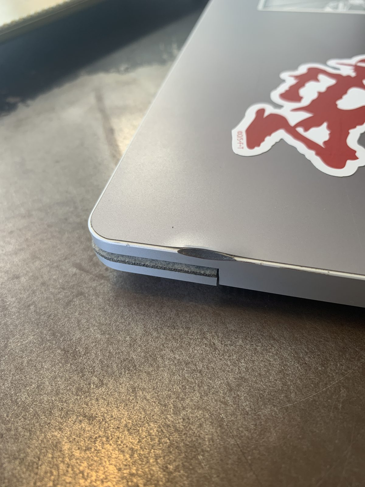
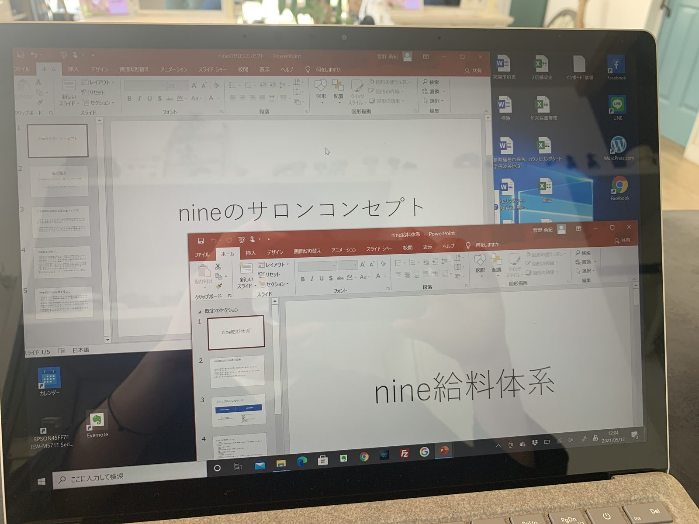

ゴールデンウィーク明けはまったりと、、、。
こんにちは。
アトリエ・ナインの菅野です。
今週は、先週のゴールデンウィークの怒涛の営業が空けて、予約もまったりとしております。
最近、来年度新卒の求人の問い合わせや、中途採用の求人の問合せなど徐々に増えてきております。
以前から求人の方用に資料を作ってはいたのですが、もっとサロンをわかりやすく知って頂けるよう、サロンワークの間に資料作成。
今日の森合店の営業は、ショートくんが休みなので、サロンワークメインは佐藤。

頑張ってサロンワークをしてくれています。
さて、パソコンをバックから取り出すかと思っていると、、、、、、、。
落下してパソコンが凹んでしまいました。
僕のサーフェスが、、、、、。

マジ、ヘコみます。。。。
そんな話はさておき、

よりわかりやすく、しっかりと作らないと。
パートの求人問合せも増えており、パートの働き方の資料もまだ中途半端。
こっちもしっかり作らないとな、、、。
まぁ〜去年はそんな時間もなく、サロンワークに追われていたのでこういった資料作成の時間を作ってくれているスタッフに感謝ですね。
どんどん、僕の売り上げを抜いちゃってください。笑
ではまた。
株式会社 アトリエ・ナイン 代表 菅野
福島市で髪質改善、ヘッドスパサロンを展開しており、２０１９年１０月には待望の２店舗目をオープン。
オープンしてから３年目に法人化。オープン５年目に突入。サロンの労働環境改善のため社員の週休２日を実現。サロンワーク８時間で残業なし。スタッフに働きやす環境整備をもっとうに経営を心がけております。何か僕に興味のある方は
LINE@:@jnp9523c
までお問い合わせください。
お待ちしております